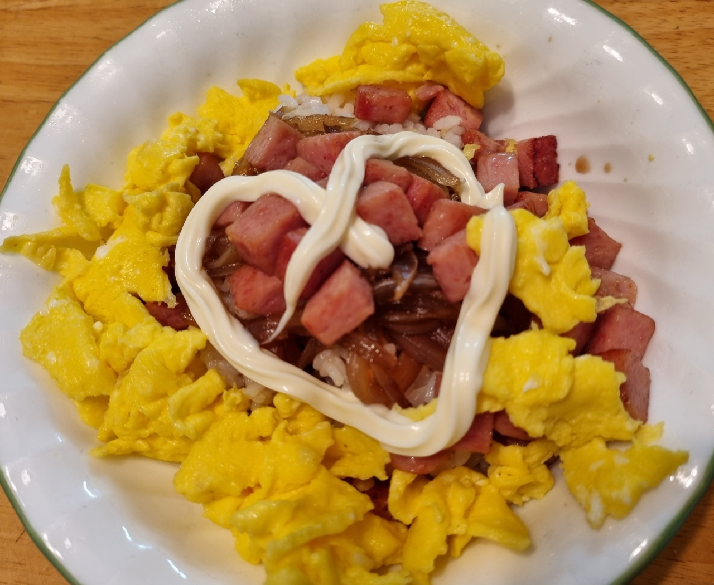

스팸마요덮밥

- 재료
스팸 1통, 밥 4인분, 계란 5개, 양파 1/2개, 간장 3T, 맛술 2.5T, 설탕 2.5T, 마요네즈
- 조리순서
- 스팸을 먹기 좋은 크기로 네모나게 썰어줍니다.
양파는 얇게 채썰고, 계란은 잘 풀어놓습니다.
- 후라이팬에 스팸을 구운 후 빼놓습니다.
팬에 양파 1/2개, 간장 3T, 맛술 2.5T, 설탕 2.5T를 넣고 끓입니다.
끓으면 약불로 줄여서 졸여줍니다.
- 예열한 팬에 식용유를 두른 후 계란을 골고루 저어서 스크램블을 만듭니다.
- 그릇에 밥을 담고 스크램블과 양파 소스, 스팸을 얹습니다.
마요네즈를 취향껏 뿌려주면 완성입니다.